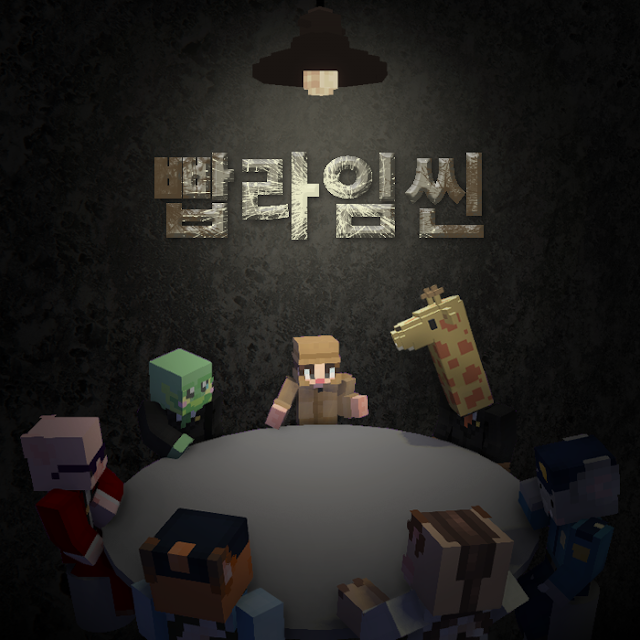
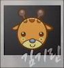
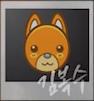
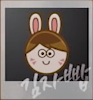
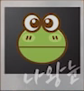
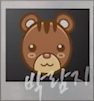
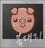
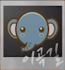

|  |
| 빱라임씬 에피소드1 P&C1 로펌 살인사건의 진범을 찾아라! |
| 장르: 추리 |
| 제작: 자빱TV |
국내 최고의 로펌에서 일어난 의문의 살인사건.
2020년 5월 22일 새벽 2시 P&C 로펌 소속 변호사 능구렁의 사무실에서 피해자 능구렁의 시체를 경비원 김복수씨가 발견했다. 피해자의 사망 추정시간은 오후 10시 ~ 12시 사이이며, 특이사항으론 자신의 사무실에서 피를 흘린채로 바닥에 누워 사망했다.
! 스포 주의 !
해당 문서에는 1차적으로 공개된 정보 외엔 가림처리하였으나,스포일러 당할 수 있습니다.
| 이름 | 김기린 | 김복수 | 김자빱 | 나왕눈 | 박람지 | 복대지 | 이곡길 |
| 직업 | P&C로펌 변호사 | 로펌 경비업체 직원 | 흥신소 사장 | P&C로펌 변호사 | 빱콘일보 기자 | 인기 아이돌 | 경찰(경위) |
| 나이 | 36세 | 29세 | 32세 | 32세 | 28세 | 23세 | 31세 |
| 피해자와 관계 | 직장 선배 | 직장 경비원 | 사적 친분 | 직장 동기 | 출입 기자 | 의뢰인 | 협력 관계 |







| 이름 | 능구렁 | 박설모 | 이구나 |
| 직업 | P&C로펌 변호사 | 대학생 | 로스쿨 학생 |
| 비고 | 람지 친동생 | 능구렁, 나왕눈과 함께 로스쿨 동기 |
| P&C 회사 | 변호사 사무실(나왕눈, 능구렁, 김기린) / 회의실 / 보안실 / 자료실 / 화장실 / 탕비실 / 흡연실 |
경찰서 / 연습실(EE엔터테이먼트) / 흥신소(빱부름센타) / 박람지 집 |
1. 자기소개 및 1차 증언 2. 팀별 증거수집 시간 (10분) 2.1 팀 분배 각자 노트, 카메라, 종이필름4, 수갑2 배부 2.2 팀별 증거수집 (사진은 4장) 3. 1차 인터뷰 4. 1차 사건 브리핑 5. 1차 투표 5.1 투표 결과 확인 6. 용의자 행적 확인 1차 7. 1차 단체 증거 수집 8. 1차 추가현장 퀴즈 9. 1차 추가현장 증거수집 시간2 (10분) 10. 용의자 행적 확인 2차 11. 2차 단체 증거 수집 12. 2차 추가현장 퀴즈 13. 2차 추가현장 증거수집 시간3 (10분) 14. 용의자 행적 확인 3차 15. 2차 사건 브리핑 16. 최종 투표 용의자 투표 + 시청자 투표(5분)로 진행 용의자 1표당 100표, 시청자 1표당 1표로 가장 많은 표를 받은 사람을 범인으로 정한다. 시청자 투표는 중복 투표가 가능하다. 16.1 투표 결과 확인 |
| 김기린 | 김복수 | 김자빱 | 나왕눈 | ||||
08:21 12:11 18:00 18:15 19:26 21:23 | 출근 탕비실에서 혼자 식사 로펌 직원들을 퇴근시킴 퇴근 김복수에게 문자2차 김복수에게 문자2차 | 14:05 15:00 19:12 19:52 20:05 21:02 21:28 21:39 22:00 22:15 23:10 02:00 | 순찰 시작 순찰 종료 박람지 방문 확인 박람지 퇴실 확인 순찰 시작 능구렁에게 폭언을 들음3차 김자빱 방문 확인 김자빱 퇴실 확인 순찰 시작 김자빱이 능구렁을 위협하는 장면 목격 순찰 종료 시체 발견 | 17:00 17:01 17:34 19:58 21:28 21:39 22:00 | 외근 능구렁에게 음성메세지를받음3차 능구렁에게 문자를 받음 능구렁에게 문자를 또 받음 능구렁 사무실 방문 능구렁 사무실 방문 끝 능구렁과 싸움을 벌임 | 12:00 13:00 15:03 18:02 | 점심식사 카페 방문 능구렁 사무실 방문3차 퇴근 |
| 박람지 | 복대지 | 이곡길 | |||||
19:00 19:12 19:52 22:14 ??? | 개인 업무 능구렁 사무실 방문 능구렁 사무실 방문 끝 집에서 기사 작성 3차 지하실에서 청산가리 제조 | 14:00 14:22 14:50 15:22 20:14 21:12 | 연습실3차 능구렁 사무실 방문 능구렁 사무실 방문 끝 은행 방문 및 스케줄로 이동3차 연습실로 이동3차 능구렁에게 문자를 받음 | 12:34 13:00 14:00 15:00 19:00 20:03 20:36 | 병원 방문3차 외부 순찰 외부 순찰 종료 복귀 후 서 내에서 업무 퇴근 후 귀가 능구렁에게 문자를 보냄 능구렁 사무실 방문 | ||
| 이름 | 김기린 | 김복수 | 김자빱 | 나왕눈 | 박람지 | 복대지 | 이곡길 |
| 1차 투표 | 2 | 1 | 1 | 2 | 1 | ||
| 2차 투표 | 3 | 2 | 2 | ||||
| 2차 시청자 투표 | 181 | 44 | 108 | 191 | 53 | 31 | 79 |
| 집계 | 481 1위 | 44 | 308 3위 | 391 2위 | 53 | 31 | 79 |